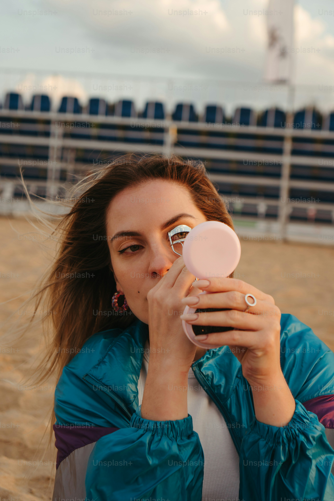
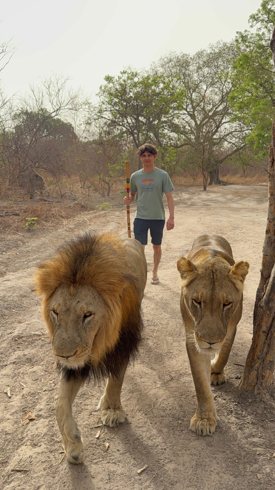

Discover Our Latest Adventures

Lina_M
★★★★★
Absolutely magical! Ubuntu Travel made my dream trip come true. Highly recommend!From the moment I reached out to Ubuntu Travel, everything felt effortless and tailored just for me. The team’s passion and attention to detail truly brought my dream vacation to life — every activity, every spot, every moment was perfectly planned. It wasn’t just a trip; it was a magical journey filled with incredible sights, warm local vibes, and memories that will last forever. If you want your next adventure to be stress-free and unforgettable, Ubuntu Travel is the way to go!

VictorV
★★★★☆
Great service and beautiful locations. Will book again!From start to finish, the service was absolutely top-notch—friendly, attentive, and always ready to help with a smile. The locations we visited were breathtaking, each one more stunning than the last, making every day feel like a dream come true. It wasn’t just a trip; it was an experience full of unforgettable moments and hidden gems. I’m already looking forward to my next booking because with service like this and places like those, why would I go anywhere else?

SarahJ
★★★★★
The guides were so friendly and knowledgeable. Loved every moment!From the very first greeting, our guides made us feel like old friends, sharing their passion for the wildlife and the land with genuine enthusiasm. Their deep knowledge brought every story to life, making each animal sighting even more fascinating. Whether it was patiently explaining animal behavior or pointing out hidden gems in the landscape, they made sure every moment was unforgettable. Honestly, their warmth and expertise turned the whole safari into a truly immersive and joyful experience. Can’t wait to go back and learn even more from them!

MikeT
★★★★★
Best vacation ever! The safari was unforgettable.From the moment we set foot in the wild, every second felt like a dream come true. Seeing elephants majestically roam, leopards stealthily prowling, and crocodiles lounging by the riverbank was pure magic. The thrill of spotting these incredible animals up close, combined with the stunning natural beauty of the Kruger Park, made it a once-in-a-lifetime adventure. Beyond the wildlife, the sunsets over the savannah and the peaceful nights under the stars created memories I’ll cherish forever. Honestly, it wasn’t just a trip — it was a life-changing experience that left me completely inspired and craving more!
AnnaB
★★★★☆
Loved the flexibility and attention to detail. Thank you Ubuntu!From the very first moment, it was clear that every aspect was thoughtfully designed to make the experience seamless and enjoyable. Whether it was customizing options to fit my exact needs or the warm, attentive support throughout, Ubuntu went above and beyond. The team’s passion really shines through in how smoothly everything runs and how they truly listen to their users. I felt supported every step of the way, which made the whole journey not just easier but genuinely fun. Highly recommend to anyone looking for a service that cares about quality and personal touch!